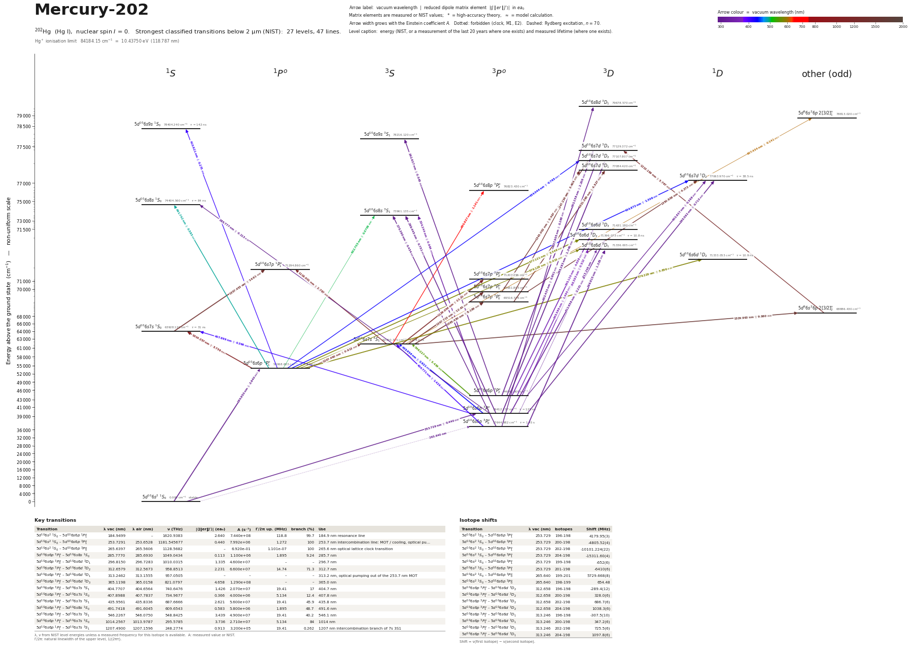

Mercury-202 energy level diagram
Energy levels and transitions of neutral 202Hg (Hg I, nuclear spin I = 0): the 47 strongest classified lines below 2 µm from the NIST Atomic Spectra Database and the 27 levels they connect, each line with its vacuum wavelength, frequency and, for 45 of them, the reduced dipole matrix element. Level energies come from NIST and refer to the natural isotope mixture; transition rates are 43 NIST, 3 measured. Hyperfine constants and measured frequencies are those of this isotope.
Hover a line or a level to isolate it, click to keep it selected. Scroll to zoom, drag to move.

Download: diagram (PDF) diagram (SVG) transitions (CSV) levels (CSV) source code

Key transitions of 202Hg
| Transition | λ vac (nm) | λ air (nm) | ν (THz) | |⟨J‖er‖J′⟩| (ea₀) | A (s⁻¹) | Γ/2π up. (MHz) | branch (%) | Use |
|---|---|---|---|---|---|---|---|---|
| 5d106s2 1S0 – 5d106s6p 1P°1 | 184.9499 | – | 1620.9383 | 2.640 | 7.440e+08 | 118.8 | 99.7 | 184.9 nm resonance line |
| 5d106s2 1S0 – 5d106s6p 3P°1 | 253.7291 | 253.6528 | 1181.545677 | 0.440 | 7.992e+06 | 1.272 | 100 | 253.7 nm intercombination line: MOT / cooling, optical pu… |
| 5d106s2 1S0 – 5d106s6p 3P°0 | 265.6397 | 265.5606 | 1128.5682 | – | 6.920e-01 | 1.101e-07 | 100 | 265.6 nm optical lattice clock transition |
| 5d106s6p 3P°1 – 5d106s8s 1S0 | 285.7770 | 285.6930 | 1049.0434 | 0.113 | 1.100e+06 | 1.895 | 9.24 | 285.7 nm |
| 5d106s6p 3P°0 – 5d106s6d 3D1 | 296.8150 | 296.7283 | 1010.0315 | 1.335 | 4.600e+07 | – | – | 296.7 nm |
| 5d106s6p 3P°1 – 5d106s6d 3D2 | 312.6579 | 312.5673 | 958.8513 | 2.231 | 6.600e+07 | 14.74 | 71.3 | 312.7 nm |
| 5d106s6p 3P°1 – 5d106s6d 3D1 | 313.2462 | 313.1555 | 957.0505 | – | – | – | – | 313.2 nm, optical pumping out of the 253.7 nm MOT |
| 5d106s6p 3P°2 – 5d106s6d 3D3 | 365.1198 | 365.0158 | 821.0797 | 4.658 | 1.290e+08 | – | – | 365.0 nm |
| 5d106s6p 3P°0 – 5d106s7s 3S1 | 404.7707 | 404.6564 | 740.6476 | 1.426 | 2.070e+07 | 19.41 | 17 | 404.7 nm |
| 5d106s6p 3P°1 – 5d106s7s 1S0 | 407.8988 | 407.7837 | 734.9677 | 0.366 | 4.000e+06 | 5.134 | 12.4 | 407.8 nm |
| 5d106s6p 3P°1 – 5d106s7s 3S1 | 435.9561 | 435.8336 | 687.6666 | 2.621 | 5.600e+07 | 19.41 | 45.9 | 435.8 nm |
| 5d106s6p 1P°1 – 5d106s8s 1S0 | 491.7418 | 491.6045 | 609.6543 | 0.583 | 5.800e+06 | 1.895 | 48.7 | 491.6 nm |
| 5d106s6p 3P°2 – 5d106s7s 3S1 | 546.2267 | 546.0750 | 548.8425 | 3.439 | 4.900e+07 | 19.41 | 40.2 | 546.1 nm |
| 5d106s6p 1P°1 – 5d106s7s 1S0 | 1014.2567 | 1013.9787 | 295.5785 | 3.736 | 2.710e+07 | 5.134 | 84 | 1014 nm |
| 5d106s6p 1P°1 – 5d106s7s 3S1 | 1207.4900 | 1207.1596 | 248.2774 | 0.913 | 3.200e+05 | 19.41 | 0.262 | 1207 nm intercombination branch of 7s 3S1 |
λ, ν from NIST level energies unless a measured frequency for this isotope is available. A: measured value or NIST. Γ/2π: natural linewidth of the upper level, 1/(2πτ).
Isotope shifts
| Transition | λ vac (nm) | Isotopes | Shift (MHz) |
|---|---|---|---|
| 5d106s2 1S0 – 5d106s6p 3P°1 | 253.729 | 196-198 | 4179.95(3) |
| 5d106s2 1S0 – 5d106s6p 3P°1 | 253.729 | 200-198 | -4805.52(4) |
| 5d106s2 1S0 – 5d106s6p 3P°1 | 253.729 | 202-198 | -10101.224(22) |
| 5d106s2 1S0 – 5d106s6p 3P°1 | 253.729 | 204-198 | -15311.60(4) |
| 5d106s2 1S0 – 5d106s6p 3P°1 | 253.729 | 199-198 | -652(6) |
| 5d106s2 1S0 – 5d106s6p 3P°1 | 253.729 | 201-198 | -6410(6) |
| 5d106s2 1S0 – 5d106s6p 3P°0 | 265.640 | 199-201 | 5729.668(8) |
| 5d106s2 1S0 – 5d106s6p 3P°0 | 265.640 | 198-199 | 654.48 |
| 5d106s6p 3P°1 – 5d106s6d 3D2 | 312.658 | 196-198 | -289.4(12) |
| 5d106s6p 3P°1 – 5d106s6d 3D2 | 312.658 | 200-198 | 328.0(6) |
| 5d106s6p 3P°1 – 5d106s6d 3D2 | 312.658 | 202-198 | 686.7(6) |
| 5d106s6p 3P°1 – 5d106s6d 3D2 | 312.658 | 204-198 | 1038.3(6) |
| 5d106s6p 3P°1 – 5d106s6d 3D1 | 313.246 | 196-198 | -307.5(10) |
| 5d106s6p 3P°1 – 5d106s6d 3D1 | 313.246 | 200-198 | 347.2(6) |
| 5d106s6p 3P°1 – 5d106s6d 3D1 | 313.246 | 202-198 | 725.5(6) |
| 5d106s6p 3P°1 – 5d106s6d 3D1 | 313.246 | 204-198 | 1097.8(6) |
Shift = ν(first isotope) − ν(second isotope).
Closed and nearly closed transitions of 202Hg
| Transition | λ vacuum (nm) | Lower level | A (s⁻¹) | Leak per scattered photon | Photons before a leak | Where the leak goes |
|---|---|---|---|---|---|---|
| 5d106s2 1S0 → 5d106s6p 1P°1 | 184.9499 | ground | 7.440e+08 measured | closed | – | no other level can be reached by electric-dipole decay |
| 5d106s2 1S0 → 5d106s6p 3P°1 | 253.7291 | ground | 7.992e+06 measured | closed | – | no other level can be reached by electric-dipole decay |
A transition is closed when its upper level can decay only to the level it was excited from, so the atom keeps scattering photons. “closed”: among the levels NIST lists, no other level below the upper level has the opposite parity and |ΔJ| ≤ 1, so no other electric-dipole decay exists. Otherwise the leak is the sum of the branching ratios of the other decay lines of the upper level (or 1 − branching ratio where that of the line itself has been measured), and the number of photons is 1 / leak. “≥” and “≤”: at least one possible decay path has no listed rate, so the leak is a lower limit. These numbers are derived from the branching ratios, lifetimes and rates of this page, not measured as such; the tag names the weakest of the inputs, * marks theory and ≈ a model calculation. Listed: lines that start on the ground level or on a metastable level and leak at most 10 %, unless more than three possible decay paths have no listed rate. Fine-structure levels only: hyperfine and Zeeman dark states and forbidden decays without a listed rate are not considered. Select a line in the diagram for the full list of its leak channels.
Listed 202Hg transitions below 2 µm
| Lower level | Upper level | λ vacuum (nm) | λ air (nm) | ν (THz) | Type | |⟨J‖er‖J′⟩| (ea₀) | A (s⁻¹) | Branching (%) | Source of matrix element / A |
|---|---|---|---|---|---|---|---|---|---|
| 5d106s2 1S0 | 5d106s6p 1P°1 | 184.9499 | – | 1620.9383 | E1 | 2.640 measured | 7.440e+08 measured | 99.7 | Porsev, Safronova, Safronova, 'A theoretical study of the g-factor and lifetime of the 6s… |
| 5d106s6p 3P°0 | 5d106s8d 3D1 | 237.9050 | 237.8324 | 1260.1353 | E1 | 0.268 NIST | 3.600e+06 NIST | – | NIST ASD (accuracy D) |
| 5d106s2 1S0 | 5d106s6p 3P°1 | 253.7291 | 253.6528 | 1181.5457 | E1 (intercombination) | 0.440 measured | 7.992e+06 measured | 100 | Gravina, Clivati, Castrillo, Fasci, Chishti, Galzerano, Levi, Gianfrani, 'Measurement of … |
| 5d106s6p 3P°1 | 5d106s7d 3D2 | 265.2832 | 265.2042 | 1130.0848 | E1 | 1.340 NIST | 3.900e+07 NIST | – | NIST ASD (accuracy B+) |
| 5d106s6p 3P°1 | 5d106s7d 1D2 | 265.5920 | 265.5130 | 1128.7706 | E1 (intercombination) | 0.713 NIST | 1.100e+07 NIST | 42.4 | NIST ASD (accuracy B) |
| 5d106s2 1S0 | 5d106s6p 3P°0 | 265.6397 | 265.5606 | 1128.5682 | clock | – | 6.920e-01 measured | 100 | Porsev, Safronova, Safronova, 'A theoretical study of the g-factor and lifetime of the 6s… |
| 5d106s6p 3P°0 | 5d106s8s 3S1 | 275.3596 | 275.2782 | 1088.7309 | E1 | 0.434 NIST | 6.100e+06 NIST | – | NIST ASD (accuracy B) |
| 5d106s6p 3P°1 | 5d106s8s 1S0 | 285.7770 | 285.6930 | 1049.0434 | E1 (intercombination) | 0.113 NIST | 1.100e+06 NIST | 9.24 | NIST ASD (accuracy D+) |
| 5d106s6p 3P°1 | 5d106s8s 3S1 | 289.4448 | 289.3600 | 1035.7499 | E1 | 0.751 NIST | 1.570e+07 NIST | – | NIST ASD (accuracy B+) |
| 5d106s6p 3P°2 | 5d106s9s 3S1 | 292.6269 | 292.5413 | 1024.4871 | E1 | 0.545 NIST | 8.000e+06 NIST | – | NIST ASD (accuracy D) |
| 5d106s6p 3P°0 | 5d106s6d 3D1 | 296.8150 | 296.7283 | 1010.0315 | E1 | 1.335 NIST | 4.600e+07 NIST | – | NIST ASD (accuracy D) |
| 5d106s6p 3P°2 | 5d106s7d 3D3 | 302.2384 | 302.1504 | 991.9072 | E1 | 2.206 NIST | 5.100e+07 NIST | – | NIST ASD (accuracy B+) |
| 5d106s6p 3P°2 | 5d106s7d 3D2 | 302.4355 | 302.3475 | 991.2607 | E1 | 0.801 NIST | 9.400e+06 NIST | – | NIST ASD (accuracy B) |
| 5d106s6p 3P°2 | 5d106s7d 1D2 | 302.8370 | 302.7489 | 989.9465 | E1 (intercombination) | 0.368 NIST | 1.980e+06 NIST | 7.62 | NIST ASD (accuracy C+) |
| 5d106s6p 3P°1 | 5d106s6d 3D2 | 312.6579 | 312.5673 | 958.8513 | E1 | 2.231 NIST | 6.600e+07 NIST | 71.3 | NIST ASD (accuracy B+) |
| 5d106s6p 3P°1 | 5d106s6d 3D1 | 313.2462 | 313.1555 | 957.0505 | E1 | – | – | – | – |
| 5d106s6p 3P°2 | 5d106s8s 3S1 | 334.2444 | 334.1483 | 896.9258 | E1 | 0.964 NIST | 1.680e+07 NIST | – | NIST ASD (accuracy B+) |
| 5d106s6p 3P°2 | 5d106s6d 3D3 | 365.1198 | 365.0158 | 821.0797 | E1 | 4.658 NIST | 1.290e+08 NIST | – | NIST ASD (accuracy B+) |
| 5d106s6p 3P°2 | 5d106s6d 3D2 | 365.5884 | 365.4843 | 820.0272 | E1 | 1.490 NIST | 1.840e+07 NIST | 19.9 | NIST ASD (accuracy B) |
| 5d106s6p 3P°2 | 5d106s6d 3D1 | 366.3930 | 366.2887 | 818.2264 | E1 | 0.512 NIST | 3.600e+06 NIST | – | NIST ASD (accuracy C) |
| 5d106s6p 3P°0 | 5d106s7s 3S1 | 404.7707 | 404.6564 | 740.6476 | E1 | 1.426 NIST | 2.070e+07 NIST | 17 | NIST ASD (accuracy B) |
| 5d106s6p 3P°1 | 5d106s7s 1S0 | 407.8988 | 407.7837 | 734.9677 | E1 (intercombination) | 0.366 NIST | 4.000e+06 NIST | 12.4 | NIST ASD (accuracy B) |
| 5d106s6p 1P°1 | 5d106s9s 1S0 | 410.9214 | 410.8054 | 729.5616 | E1 | 0.275 NIST | 2.200e+06 NIST | 31.2 | NIST ASD (accuracy D) |
| 5d106s6p 1P°1 | 5d106s7d 3D2 | 434.0443 | 433.9223 | 690.6956 | E1 (intercombination) | 0.765 NIST | 2.900e+06 NIST | – | NIST ASD (accuracy C+) |
| 5d106s6p 1P°1 | 5d106s7d 1D2 | 434.8717 | 434.7495 | 689.3814 | E1 | 1.306 NIST | 8.400e+06 NIST | 32.3 | NIST ASD (accuracy B) |
| 5d106s6p 3P°1 | 5d106s7s 3S1 | 435.9561 | 435.8336 | 687.6666 | E1 | 2.621 NIST | 5.600e+07 NIST | 45.9 | NIST ASD (accuracy B) |
| 5d106s6p 1P°1 | 5d106s8s 1S0 | 491.7418 | 491.6045 | 609.6543 | E1 | 0.583 NIST | 5.800e+06 NIST | 48.7 | NIST ASD (accuracy D+) |
| 5d106s6p 1P°1 | 5d106s8s 3S1 | 502.7032 | 502.5631 | 596.3607 | E1 (intercombination) | 0.0709 NIST | 2.670e+04 NIST | – | NIST ASD (accuracy B) |
| 5d106s6p 3P°2 | 5d106s7s 3S1 | 546.2267 | 546.0750 | 548.8425 | E1 | 3.439 NIST | 4.900e+07 NIST | 40.2 | NIST ASD (accuracy B) |
| 5d106s6p 1P°1 | 5d106s6d 3D2 | 577.1210 | 576.9609 | 519.4621 | E1 (intercombination) | 3.346 NIST | 2.360e+07 NIST | 25.5 | NIST ASD (accuracy B) |
| 5d106s6p 1P°1 | 5d106s6d 3D1 | 579.1286 | 578.9680 | 517.6613 | E1 (intercombination) | 0.415 NIST | 6.000e+05 NIST | – | NIST ASD (accuracy D) |
| 5d106s6p 1P°1 | 5d106s6d 1D2 | 579.2276 | 579.0670 | 517.5728 | E1 | 3.856 NIST | 3.100e+07 NIST | 33.8 | NIST ASD (accuracy D) |
| 5d106s7s 3S1 | 5d96s26p 2[3/2]°1 | 607.4340 | 607.2658 | 493.5392 | E1 | 0.141 NIST | 6.000e+04 NIST | – | NIST ASD (accuracy E) |
| 5d106s7s 3S1 | 5d106s8p 3P°2 | 690.9367 | 690.7462 | 433.8928 | E1 | 1.141 NIST | 1.600e+06 NIST | – | NIST ASD (accuracy D) |
| 5d106s6p 1P°1 | 5d106s7s 1S0 | 1014.2567 | 1013.9787 | 295.5785 | E1 | 3.736 NIST | 2.710e+07 NIST | 84 | NIST ASD (accuracy B+) |
| 5d106s7s 3S1 | 5d106s7p 1P°1 | 1118.0011 | 1117.6950 | 268.1504 | E1 (intercombination) | 2.767 NIST | 3.700e+06 NIST | – | NIST ASD (accuracy D) |
| 5d106s7s 3S1 | 5d106s7p 3P°2 | 1129.0542 | 1128.7451 | 265.5253 | E1 | 11.31 NIST | 3.600e+07 NIST | – | NIST ASD (accuracy D) |
| 5d106s6p 1P°1 | 5d106s7s 3S1 | 1207.4900 | 1207.1596 | 248.2774 | E1 (intercombination) | 0.913 NIST | 3.200e+05 NIST | 0.262 | NIST ASD (accuracy D) |
| 5d96s26p 2[3/2]°2 | 5d106s7d 3D3 | 1213.1591 | 1212.8272 | 247.1172 | E1 | 3.767 NIST | 2.300e+06 NIST | – | NIST ASD (accuracy D) |
| 5d106s7p 3P°0 | 5d106s7d 3D1 | 1321.3803 | 1321.0190 | 226.8783 | E1 | 4.527 NIST | 6.000e+06 NIST | – | NIST ASD (accuracy D) |
| 5d106s7p 3P°1 | 5d106s7d 3D2 | 1343.0022 | 1342.6351 | 223.2256 | E1 | 5.467 NIST | 5.000e+06 NIST | – | NIST ASD (accuracy D) |
| 5d106s7p 3P°1 | 5d106s7d 3D1 | 1347.2337 | 1346.8654 | 222.5245 | E1 | 3.404 NIST | 3.200e+06 NIST | – | NIST ASD (accuracy E) |
| 5d106s7p 3P°1 | 5d106s7d 1D2 | 1350.9557 | 1350.5864 | 221.9114 | E1 (intercombination) | 4.272 NIST | 3.000e+06 NIST | 11.6 | NIST ASD (accuracy D) |
| 5d106s7s 1S0 | 5d106s7p 1P°1 | 1357.4526 | 1357.0814 | 220.8493 | E1 | 14.91 NIST | 6.000e+07 NIST | – | NIST ASD (accuracy D) |
| 5d106s7s 3S1 | 5d106s7p 3P°1 | 1367.7125 | 1367.3386 | 219.1926 | E1 | 12.61 NIST | 4.200e+07 NIST | – | NIST ASD (accuracy D) |
| 5d106s7s 3S1 | 5d106s7p 3P°0 | 1395.4298 | 1395.0484 | 214.8388 | E1 | 8.189 NIST | 5.000e+07 NIST | – | NIST ASD (accuracy D) |
| 5d106s7s 3S1 | 5d96s26p 2[3/2]°2 | 1529.9632 | 1529.5452 | 195.9475 | E1 | 9.860 NIST | 1.100e+07 NIST | – | NIST ASD (accuracy D) |
Reduced dipole matrix elements follow the convention A = ω³|d|²/(3πε₀ħc³(2J′+1)), with J′ the upper level. Tags show where a number comes from: measured, NIST compilation, high-accuracy theory, or a model calculation.
202Hg energy levels
| Level | Energy (cm⁻¹) | J | Parity | Lifetime | gJ | Hyperfine A (MHz) | Hyperfine B (MHz) | Lifetime source | Hyperfine source |
|---|---|---|---|---|---|---|---|---|---|
| 5d106s2 1S0 | 0.000 | 0 | even | stable | – | – | – | – | – |
| 5d106s6p 3P°0 | 37644.982 | 0 | odd | 1.445 s measured | – | – | – | Porsev, Safronova, Safronova, 'A theoretical study of the g-factor and lifetime of the 6s… | – |
| 5d106s6p 3P°1 | 39412.237 | 1 | odd | 125.1 ns measured | 1.4861 | – | – | Gravina, Clivati, Castrillo, Fasci, Chishti, Galzerano, Levi, Gianfrani, 'Measurement of … | – |
| 5d106s6p 3P°2 | 44042.909 | 2 | odd | – | 1.501 | – | – | – | – |
| 5d106s6p 1P°1 | 54068.683 | 1 | odd | 1.34 ns measured | 1.0145 | – | – | Porsev, Safronova, Safronova, 'A theoretical study of the g-factor and lifetime of the 6s… | – |
| 5d106s7s 3S1 | 62350.325 | 1 | even | 8.2 ns measured | 2.0029 | – | – | Mosburg & Wilke, 'Some new transition probabilities for mercury I', J. Quant. Spectrosc. … | – |
| 5d106s7s 1S0 | 63928.120 | 0 | even | 31 ns measured | – | – | – | Mosburg & Wilke, 'Some new transition probabilities for mercury I', J. Quant. Spectrosc. … | – |
| 5d96s26p 2[3/2]°2 | 68886.430 | 2 | odd | – | – | – | – | – | – |
| 5d106s7p 3P°0 | 69516.576 | 0 | odd | – | – | – | – | – | – |
| 5d106s7p 3P°1 | 69661.803 | 1 | odd | – | – | – | – | – | – |
| 5d106s7p 3P°2 | 71207.296 | 2 | odd | – | – | – | – | – | – |
| 5d106s7p 1P°1 | 71294.860 | 1 | odd | – | – | – | – | – | – |
| 5d106s6d 1D2 | 71333.053 | 2 | even | 10.9 ns measured | 1.058 | – | – | Mosburg & Wilke, 'Some new transition probabilities for mercury I', J. Quant. Spectrosc. … | – |
| 5d106s6d 3D1 | 71336.005 | 1 | even | – | 0.49864 | – | – | – | – |
| 5d106s6d 3D2 | 71396.073 | 2 | even | 10.8 ns measured | 1.1091 | – | – | Mosburg & Wilke, 'Some new transition probabilities for mercury I', J. Quant. Spectrosc. … | – |
| 5d106s6d 3D3 | 71431.180 | 3 | even | – | 1.3343 | – | – | – | – |
| 5d106s8s 3S1 | 73961.135 | 1 | even | – | 2.0038 | – | – | – | – |
| 5d106s8s 1S0 | 74404.560 | 0 | even | 84 ns measured | – | – | – | Mosburg & Wilke, 'Some new transition probabilities for mercury I', J. Quant. Spectrosc. … | – |
| 5d106s8p 3P°2 | 76823.430 | 2 | odd | – | 1.4825 | – | – | – | – |
| 5d106s7d 1D2 | 77063.970 | 2 | even | 38.5 ns measured | 1.0219 | – | – | Mosburg & Wilke, 'Some new transition probabilities for mercury I', J. Quant. Spectrosc. … | – |
| 5d106s7d 3D1 | 77084.420 | 1 | even | – | 0.4996 | – | – | – | – |
| 5d106s7d 3D2 | 77107.807 | 2 | even | – | 1.1465 | – | – | – | – |
| 5d106s7d 3D3 | 77129.372 | 3 | even | – | 1.3306 | – | – | – | – |
| 5d106s9s 3S1 | 78216.120 | 1 | even | – | 2.0088 | – | – | – | – |
| 5d106s9s 1S0 | 78404.240 | 0 | even | 142 ns measured | – | – | – | Mosburg & Wilke, 'Some new transition probabilities for mercury I', J. Quant. Spectrosc. … | – |
| 5d96s26p 2[3/2]°1 | 78813.020 | 1 | odd | – | 1.2103 | – | – | – | – |
| 5d106s8d 3D1 | 79678.570 | 1 | even | – | – | – | – | – | – |
Hg⁺ ionisation limit 84184.15 cm⁻¹ = 10.43750 eV (118.787 nm)
Sources
- Gravina, Castrillo, Gianfrani, 'Isotope shift spectroscopy in mercury vapors: a valid alt…
- Gravina, Clivati, Castrillo, Fasci, Chishti, Galzerano, Levi, Gianfrani, 'Measurement of …
- Mosburg & Wilke, 'Some new transition probabilities for mercury I', J. Quant. Spectrosc. …
- Mosburg & Wilke, 'Some new transition probabilities for mercury I', J. Quant. Spectrosc. …
- NIST ASD
- NIST ASD level energies
- Porsev, Safronova, Safronova, 'A theoretical study of the g-factor and lifetime of the 6s…
- Porsev, Safronova, Safronova, 'A theoretical study of the g-factor and lifetime of the 6s…
Conventions. (1) Isotope-shift keys 'a-b' mean nu(a) - nu(b); the 253.7 nm and 313 nm shifts are relative to 198Hg as printed. 199Hg / 201Hg shifts of the 253.7 nm line are hyperfine centres of gravity corrected by Schelfhout & McFerran for the second-order hyperfine interaction. (2) Clock frequencies exceed double precision: use value_Hz_str / unc_Hz. frequency_THz_<A> carries further isotopes. (3) Fields beyond SCHEMA.md: natural_linewidth_*, hyperfine_component_frequencies, frequency_ratios, magic_frequency_MHz, g_factor_<A>Hg (g of the J=0 clock state, x1 not x1e3), top-level 'rydberg' (ionization limit) and 'conflicts'. (4) A_s, linewidth and rme_J_ea0 of the 253.7 nm line are derived here from the measured lifetime (schema convention, single decay channel). (5) Only the 201Hg magnetic hyperfine constants could be sourced; the 199Hg values are missing (see not_found).
Atoms with measured data
- Lithium-632 levels, 85 lines
- Lithium-732 levels, 85 lines
- Beryllium-917 levels, 26 lines
- Sodium-2336 levels, 106 lines
- Magnesium-2418 levels, 61 lines
- Magnesium-2518 levels, 61 lines
- Potassium-3934 levels, 84 lines
- Potassium-4034 levels, 84 lines
- Potassium-4134 levels, 84 lines
- Calcium-4035 levels, 61 lines
- Calcium-4335 levels, 61 lines
- Chromium-5256 levels, 87 lines
- Chromium-5356 levels, 87 lines
- Rubidium-8536 levels, 94 lines
- Rubidium-8736 levels, 94 lines
- Strontium-8440 levels, 70 lines
- Strontium-8640 levels, 70 lines
- Strontium-8740 levels, 70 lines
- Strontium-8840 levels, 70 lines
- Cadmium-11115 levels, 21 lines
- Cadmium-11315 levels, 21 lines
- Cadmium-11415 levels, 21 lines
- Caesium-13331 levels, 79 lines
- Barium-13744 levels, 89 lines
- Barium-13844 levels, 89 lines
- Dysprosium-16139 levels, 55 lines
- Dysprosium-16239 levels, 55 lines
- Dysprosium-16339 levels, 55 lines
- Dysprosium-16439 levels, 55 lines
- Erbium-16673 levels, 90 lines
- Erbium-16773 levels, 90 lines
- Erbium-16873 levels, 90 lines
- Thulium-16972 levels, 73 lines
- Ytterbium-17118 levels, 26 lines
- Ytterbium-17318 levels, 26 lines
- Ytterbium-17418 levels, 26 lines
- Mercury-19927 levels, 47 lines
- Mercury-20127 levels, 47 lines